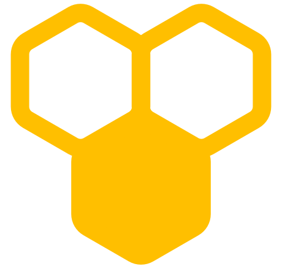
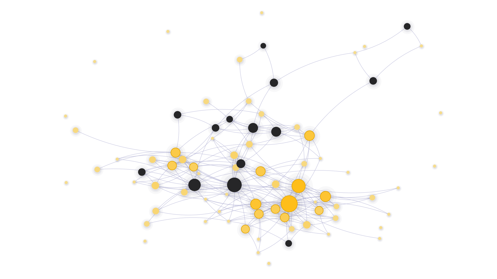
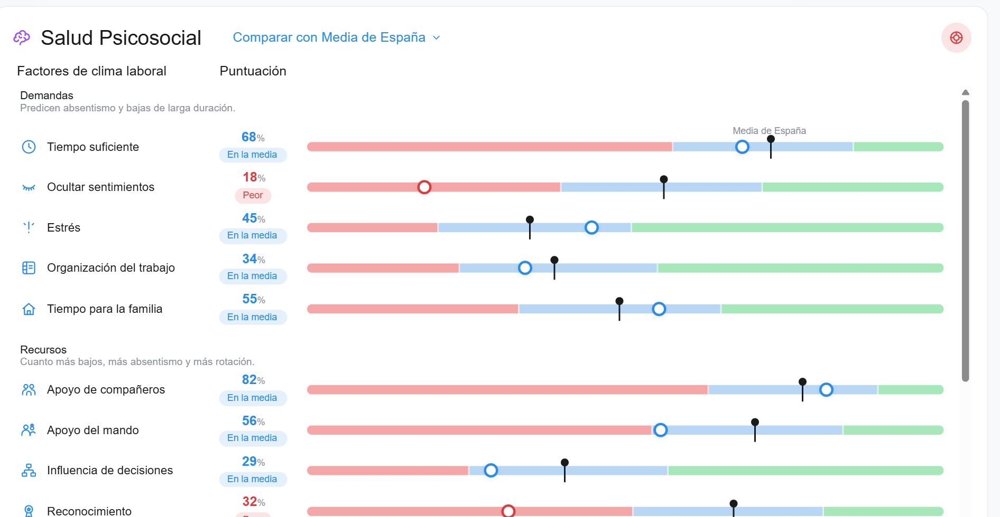
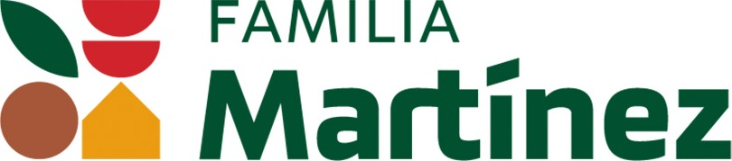

Predictive Science for Smarter Organizations
Para dirección de personas y dirección general
El problema
Lo que dice el organigrama
Cargos y líneas de mando
Cómo funciona de verdad
De quién depende todo, tenga cargo o no

Beetrics Talent · Predictive Science for Smarter Organizations
02 / 12
Se puede evitar
20-25 %
menos bajas voluntarias cuando la dirección pidió a sus mandos que se ocuparan de fidelizar a su equipo
Friebel, Heinz y Zubanov (2022), Management Science, 68(1). Experimento de campo en 238 centros de trabajo y 7.700 personas.
Beetrics Talent · Predictive Science for Smarter Organizations
03 / 12
Qué es Beetrics Talent
Lo que vive
20 factores de su trabajo y la escala eNPS
Lo que cuenta
Dos preguntas abiertas, resumidas de forma anónima
Lo que dicen de ella
A quién acude cada uno para liderar, innovar, resolver y pedir apoyo
De 6 a 8 minutos desde el móvil. Sin integración con vuestros sistemas.
Beetrics Talent · Predictive Science for Smarter Organizations
04 / 12
Cómo funciona
1
Por SMS o correo, sin instalar nada
2
Desde el móvil y en su idioma
3
Por sector, tamaño y ocupación
4
Qué hacer, con quién y en qué orden
Beetrics Talent · Predictive Science for Smarter Organizations
05 / 12
El mapa real

A quién siguen, tenga cargo o no
De quién salen las ideas
A quién acuden para resolver
En quién se apoyan cuando algo va mal
Red real de Familia Martínez, sin nombres
Beetrics Talent · Predictive Science for Smarter Organizations
06 / 12
Tu clima, comparado
Cada factor frente a la media de España, con un semáforo: en la media, peor o mucho peor.
Vista de la plataforma con datos de demostración

Beetrics Talent · Predictive Science for Smarter Organizations
07 / 12
Caso Familia Martínez · Liderazgo

7 de 10
de los líderes más reconocidos por sus compañeros no tenían ningún cargo
26
votos para la persona más elegida, una operaria. El mando más votado recibió 20.
87 %
de participación: 71 de 82 personas, en unos 5 minutos cada una
Familia Martínez, empresa de alimentación. 82 personas en 10 departamentos, 909 nominaciones.
Beetrics Talent · Predictive Science for Smarter Organizations
08 / 12
Caso Familia Martínez · Dependencias
5
personas destacan a la vez en las cuatro redes: liderazgo, ideas, resolución y apoyo
31 %
de la plantilla acude a la misma persona experta para resolver problemas
5 %
de las conexiones posibles entre Calidad y Producción existen: 21 de 396
Familia Martínez, empresa de alimentación. 71 respuestas y 909 nominaciones entre compañeros.
Beetrics Talent · Predictive Science for Smarter Organizations
09 / 12
Confían en Beetrics
Con el apoyo de
Beetrics Talent · Predictive Science for Smarter Organizations
10 / 12
Ciencia y confianza
Método diseñado por un doctor en Psicología
Investigación en Nature Reviews Psychology y Cambridge
Nacido en la Universitat de València
Comparación con España por sector y tamaño
Ningún directivo ve lo que ha respondido cada persona
Clima solo en grupos de 5 personas o más
La IA solo resume las respuestas abiertas, y se puede desactivar
Sin integraciones y conforme al RGPD
Beetrics Talent · Predictive Science for Smarter Organizations
11 / 12
Siguiente paso
Víctor Ciudad-Fernández · CEO y fundador
victor.ciudad@beetrics.com
+34 662 23 05 45 · beetrics.com
Beetrics · Scientific Precision for Accurate Management